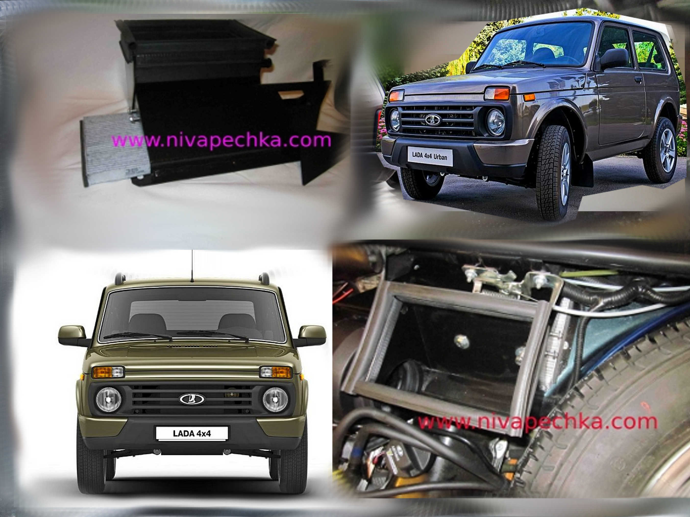

Новая Нива LADA 4x4 URBAN с кондиционером и салонным фильтром.
Обновлено:
Появилась возможность установки салонного фильтра и вентилятора 2108 в LADA 4x4 URBAN в народе именуемую новая Нива УРБАН. Теперь в городе можно пользоваться Нивой и с кондиционером и с салонным фильтром! Причем салонный фильтр хоть с гранулами активированного угля, хоть такой же салонный фильтр без активированного угля, просто белый фильтр. Мощный и тихий центробежный вентилятор 2108 в Ниве позволяет улучшить вентиляцию салона настолько, что вы зададитесь другим вопросом!!! Почему вы не сделали этого раньше?!

На фото видны модернизированные новые бамперы Нивы УРБАН. Крупный значок LADA 4x4 и новая радиаторная решетка делают
Ниву еще более индивидуальней. Внешний вид значительно улучшился. Однако не всем придутся косметические улучшения по душе.
Ведь все Ниваводы ценят Ниву за ее практичность! И старые бамперы на Ниве значительно практичней, не только за городом, но и в городе тоже.
Новая нива LADA 4x4 URBAN и салонный фильтр.